A serious buyer or investor evaluating a Battery Energy Storage System (BESS) plant—whether an operational facility, manufacturing site, or project under development—needs a structured checklist to mitigate risks in technical performance, financial viability, regulatory compliance, and operational reliability. This ensures alignment with market demands like renewable integration and grid stability, particularly in high-growth regions like India.
Technical Audits and Electrochemical Performance Metrics
The value of a BESS asset is intrinsically linked to its electrochemical health and its ability to discharge energy according to market signals. A comprehensive technical due diligence (TDD) process must evaluate the system from the individual battery cell level through the module and rack architecture to the integrated containerized housing.
Capacity, Power, and Usable Energy
A primary checklist item involves the verification of the power rating (kW or MW) and energy capacity (kWh or MWh). Investors must distinguish between nameplate capacity and usable energy. While a 4 MWh BESS might be marketed as such, the recommended Depth of Discharge (DoD) dictated by the manufacturer—often 80% to 90% for Lithium Iron Phosphate (LFP) or Nickel Manganese Cobalt (NMC) chemistries—restricts the actual energy available for market participation. For example, a 4 MWh system with an 80% DoD provides only 3.2 MWh of usable energy. If financial models assume 100% utilization, the resulting revenue projections will be inherently flawed.
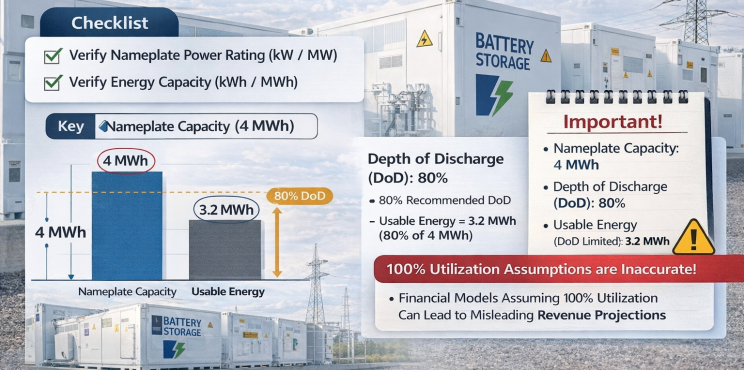
Efficiency and Auxiliary Load Dynamics
Round-trip efficiency (RTE) serves as a critical measure of energy loss during the charge-discharge cycle. As of 2025 and 2026, high-quality lithium-ion systems generally exhibit RTEs between 85% and 95% at the cell level, but this figure can drop significantly at the system level due to auxiliary consumption. The energy required to power HVAC systems, thermal management pumps, and Energy Management System (EMS) controls constitutes the auxiliary load, which is net-exothermic during both charge and discharge for lithium-ion technologies.
The impact of power-to-energy (P/E) ratios on efficiency is a nuanced checklist item. Research indicates that systems with high P/E ratios often suffer from lower net RTE because the high-power density necessitates more aggressive cooling, thereby increasing auxiliary consumption. For instance, certain lithium-ion configurations have shown a drop from an 88% RTE to 75% when auxiliary loads were factored in.
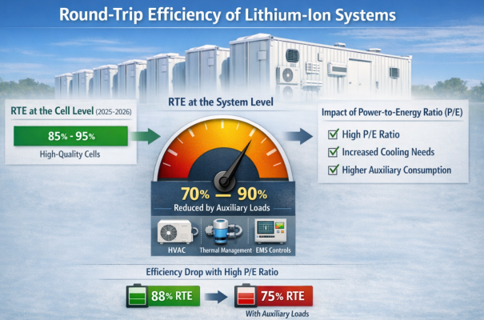
Degradation Modeling and Lifecycle Costs
The long-term profitability of a BESS asset is threatened by degradation, which occurs through both calendar aging and cycling. Investors must evaluate degradation curves based on the anticipated duty cycle. Thermal management is the primary lever for mitigating degradation; research confirms that maintaining operating temperatures between 25°C and 35°C is essential to limit energy yield loss.
Technical Performance Checklist for BESS FINALIZATION
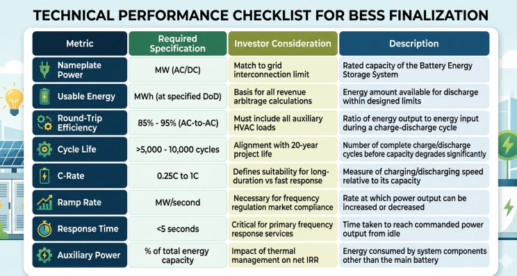
Safety Standards and Regulatory Compliance
The chemical nature of BESS introduces fire and explosion hazards that require a stringent safety audit. Inadequate safety due diligence not only risks the physical asset but also the ability to secure insurance, project financing, and community acceptance.
The Regulatory Triangle: UL 9540, NFPA 855, and the AHJ
A compliant BESS installation is governed by three critical pillars: product certification (UL 9540), installation standards (NFPA 855), and local enforcement by the Authority Having Jurisdiction (AHJ).
UL 9540 certifies the energy storage system as a complete, integrated unit, ensuring that the batteries, inverters, and management software have been tested together for safety. However, serious investors must also review the UL 9540A test reports. Unlike a standard certification, UL 9540A is a test method that evaluates thermal runaway fire propagation. It provides data on whether flaming occurs outside the unit, the composition of flammable gases released, and the heat flux on adjacent walls or units. This data is essential for justifying reduced spacing between units to the local fire marshal.
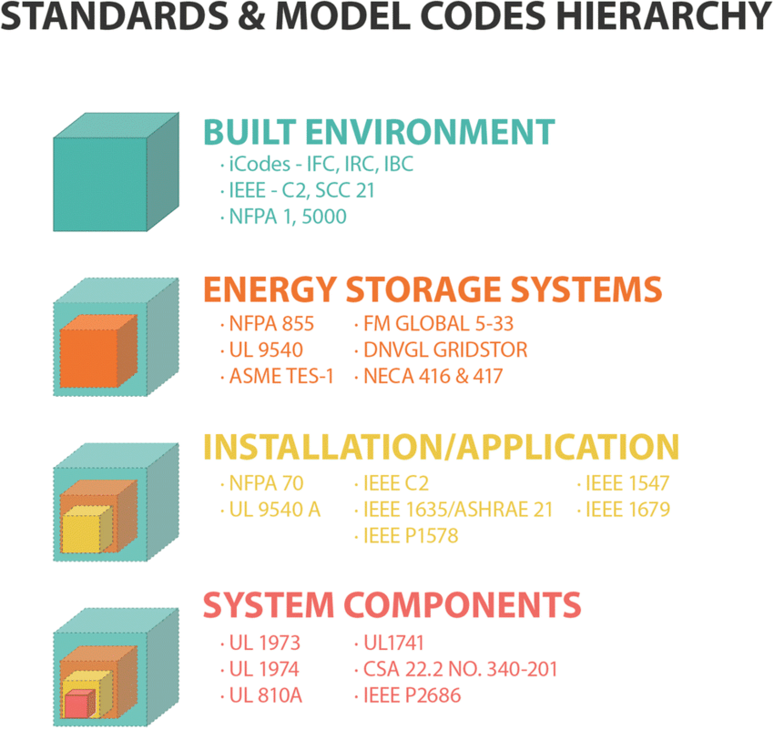
NFPA 855 provides the installation blueprint, mandating minimum clearances—typically 3 feet (0.9 meters) between units and from egress paths—to prevent fire spread and allow first-responder access. It also defines the requirements for an Energy Storage Management System (ESMS) that can disconnect the system during abnormal thermal or electrical conditions.
Safety and Certification Checklist
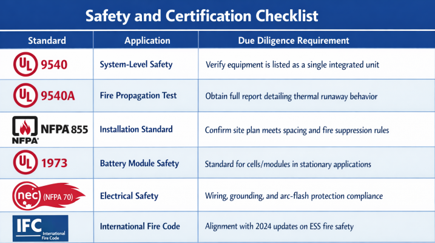
Financial Architecture and Revenue Stacking Strategies
The economic viability of a BESS project in 2026 relies on a diversified revenue stack rather than a single contract. Investors must evaluate the projects financial model against current capital expenditure (CAPEX) benchmarks and the viability of the proposed revenue streams.
CAPEX Benchmarks and Levelized Cost of Storage (LCOS)
As of late 2025, the total all-in CAPEX for a utility-scale, long-duration BESS project has declined to approximately $125 per kWh. This cost is roughly split between core equipment shipped from manufacturers—predominantly from China—at $75/kWh and installation, engineering, and grid connection costs at $50/kWh.
A critical checklist item for financial due diligence is the Levelized Cost of Storage (LCOS), which represents the cost of shifting one MWh of electricity over the life of the asset. Current benchmarks suggest an LCOS of approximately $65/MWh, assuming a 20-year operational life and a 7% discount rate. Investors should be wary of models that assume a shorter lifespan (e.g., 10 years) without factoring in significant augmentation or replacement costs.
Financial and Market Checklist
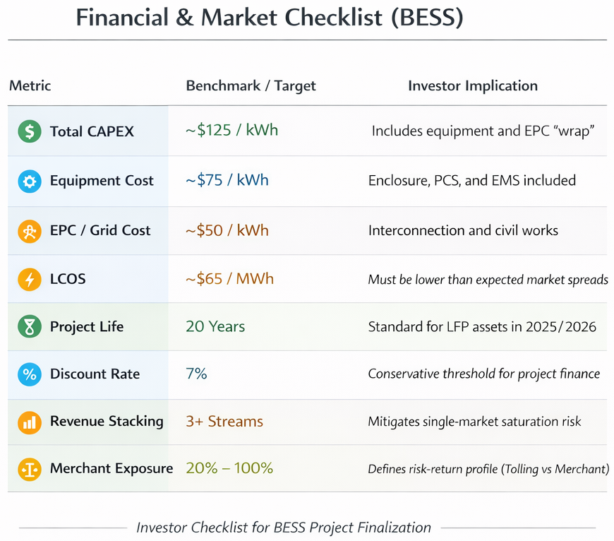
Contractual Structures and Risk Allocation
The legal framework of a BESS acquisition must address the "interface risk" between the battery supplier, the EPC contractor, and the market optimizer.
EPC and Procurement Models
Investors typically face a choice between a Full-Wrap EPC and a Split-Contract structure.
Full-Wrap EPC: A single contractor takes responsibility for the entire project, from design to commissioning. This provides a single point of responsibility for liquidated damages (LDs) for delays or performance failures, which is highly favored by lenders.
Split-Contracting: The buyer purchases the BESS directly from the Original Equipment Manufacturer (OEM) and hires a separate contractor for the balance of plant (BoP). While this can reduce the wrap premium in the CAPEX, it creates significant risk if a performance failure occurs, as the OEM and BoP contractor may deflect responsibility to one another.
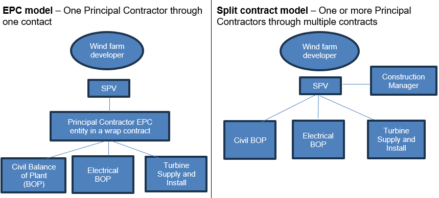
Warranties and Performance Guarantees
The BESS warranty is the asset's primary insurance policy. A checklist for finalizing an acquisition must ensure that warranties cover:
- Energy Capacity: Guaranteeing that the battery will retain a specific percentage (e.g., 70%) of its nominal capacity over 10 to 20 years.
- Round-Trip Efficiency: Protecting against degradation in the conversion efficiency.
- Availability: Ensuring the system is ready to operate (typically >98% availability).
- Ramp Rate and Response Time: Crucial for projects committed to ancillary service markets.
Investors must verify if warranties are assignable to lenders in a project finance scenario. Furthermore, the excuse events in the warranty—such as exceeding a specific temperature or cycle count—must align with the operational parameters in the revenue contract (e.g., a tolling agreement).
Commercial Contract Comparison
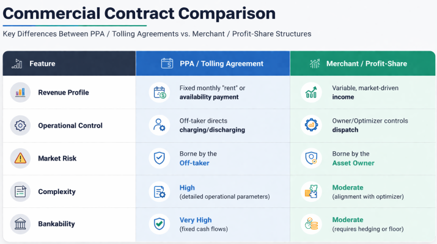
Siting, Grid Interconnection, and Environmental Factors
A BESS assets profitability is geographically constrained. A site selection checklist must account for grid capacity, locational marginal pricing, and physical site hazards.
Grid Capacity and Basis Risk
Optimal sites are located near Points of Interest (POIs), such as major substations or transmission lines, to minimize the allocated costs of grid upgrades. Investors must evaluate Basis Risk—the potential for local nodal prices to diverge from market hub prices due to transmission congestion. Sites near renewable hubs or congestion points can capture high price spikes but may also face higher curtailment risk.
Topographical and Natural Hazard Analysis
Critical infrastructure must be resilient to climate-adjusted risks. Checklist items include:
- Flood and Hurricane Winds: Proximity to floodplains or high-wind zones.
- Wildfire Risk: Assessing predictive wildfire risk and ensuring vegetation buffers around the BESS containers.
- Soil Conditions: Peatlands should be avoided due to low bearing capacity and high carbon release if disturbed.
- Noise and Zoning: BESS projects must often include noise mitigation and maintain specific setbacks from property lines, particularly when located in residential zones.
Operational Due Diligence and O&M Protocols
Unlike solar or wind assets, a BESS requires active, high-frequency management to prevent catastrophic reliability events. Operational due diligence should focus on the quality of the monitoring systems and the rigor of the maintenance schedule.
BMS Health and Predictive Diagnostics
The Battery Management System (BMS) is the brain of the asset. It must continuously acquire data on cell voltage, current, and temperature. Advanced O&M protocols now include predictive maintenance using diagnostic software like TWAICE or ACCURE Battery Intelligence to identify weak cells weeks before they fail. Checklist items for operational handover include verifying that BMS diagnostics are active for all module groups and that firmware is compatible with the latest thermal protection logic.
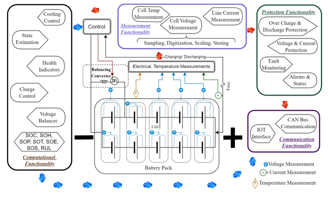
Maintenance and Safety Inspections
The maintenance checklist must include:
- Infrared (IR) Thermography: Annual scans of all high-current DC connections to identify resistive heating and prevent arc-flash events.
- Thermal Management: Inspection of liquid cooling loops for leaks and verification that HVAC systems maintain the ambient temperature within manufacturer specifications (typically 15-30°C).
- Fire Suppression: Semi-annual testing of gas detection systems and fire alarm interconnections.
ESG Compliance and Supply Chain Traceability
By 2026, ESG due diligence has evolved from a voluntary disclosure to a mandatory regulatory requirement for institutional grade investments.
Forced Labor and the CSDDD: Under the EU Corporate Sustainability Due Diligence Directive (CSDDD), companies with global turnovers exceeding €450 million must conduct risk-based mapping of their indirect suppliers. For BESS investors, this means verifying the origin of lithium and other critical minerals. The use of the standardized Due Diligence Reporting Template (DDRT) is now a requirement for major OEMs to demonstrate compliance with forced labor and modern slavery regulations.
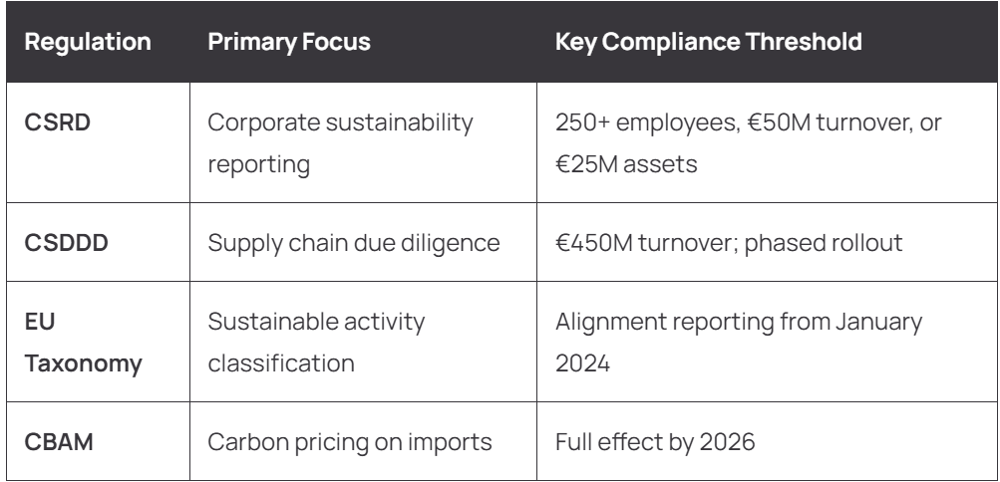
Environmental Impact and Decommissioning: Environmental due diligence must assess the carbon footprint of the BESS manufacturing process and the availability of a recycling path for spent batteries. Furthermore, municipalities are increasingly requiring decommissioning bonds—financial securities that ensure the project owner has funds to remove the equipment and restore the land after the 20-year project life.
Vendor Bankability and Red Flag Identification
The final stage of finalizing a BESS acquisition involves an assessment of the vendors financial health and a final Red Flag scrub.
BloombergNEF Tier 1 Criteria
The BloombergNEF Tier 1 list serves as a primary benchmark for vendor bankability. To qualify as a Tier 1 Energy Storage Manufacturer, a company must own its production facilities and have provided its own-brand products to at least six different projects over 1 MW that were financed non-recourse by six different commercial banks. Investors should prioritize vendors with a consistent Tier 1 ranking (e.g., Trina Storage or AlphaESS) as this reflects sustained confidence from international financial institutions.
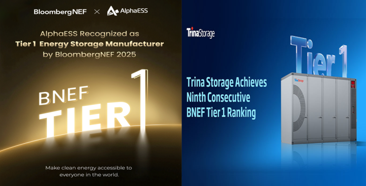
Common Red Flags in Final Diligence
During the 24-hour Red Flag Snapshot often conducted by firms like Euclid Power, several binary risks can emerge:
- Interconnection Delays: Grid studies that suggest upgrade costs exceeding the projects contingency budget.
- Inadequate Safety Spacing: Systems designed to spacing requirements that are not supported by the UL 9540A report, leading to potential AHJ rejection.
- Warranty Mismatch: Operating parameters in the revenue contract that would void the battery warranty (e.g., requiring two cycles per day when the warranty only covers one).
- Lack of EPC Wrap: A split-contract structure where the developer has not secured a coordination agreement between the OEM and the installer.
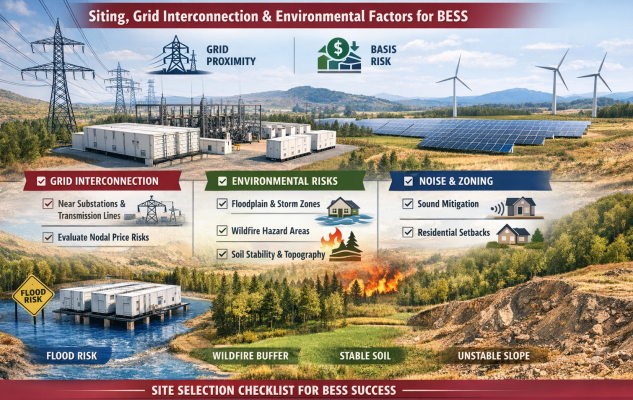
Conclusion
The successful acquisition of a BESS plant requires the synthesis of technical data, market dynamics, and regulatory compliance into a coherent risk-managed strategy. As the market moves toward $65/MWh LCOS and 20-year asset lives, the margin for error in due diligence has narrowed. By adhering to this comprehensive framework, a serious buyer can transition from a position of uncertainty to a data-driven investment decision, ensuring the long-term performance and profitability of the BESS asset in an increasingly competitive global energy market.